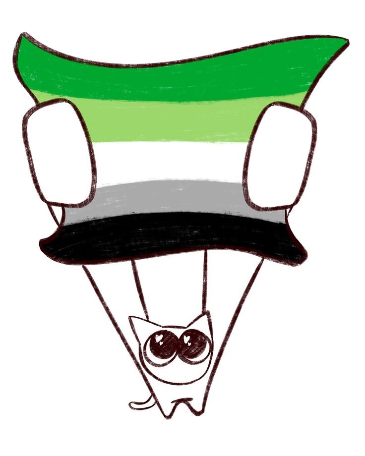
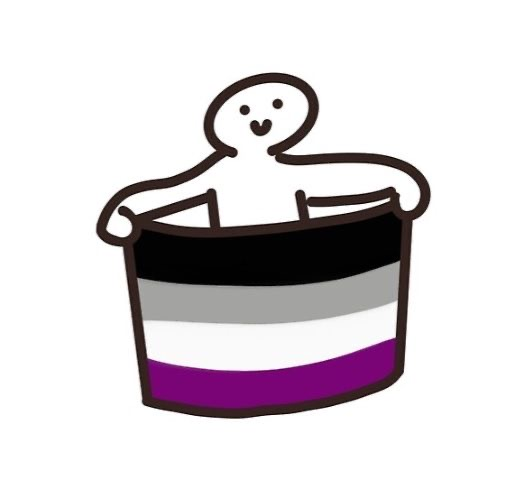
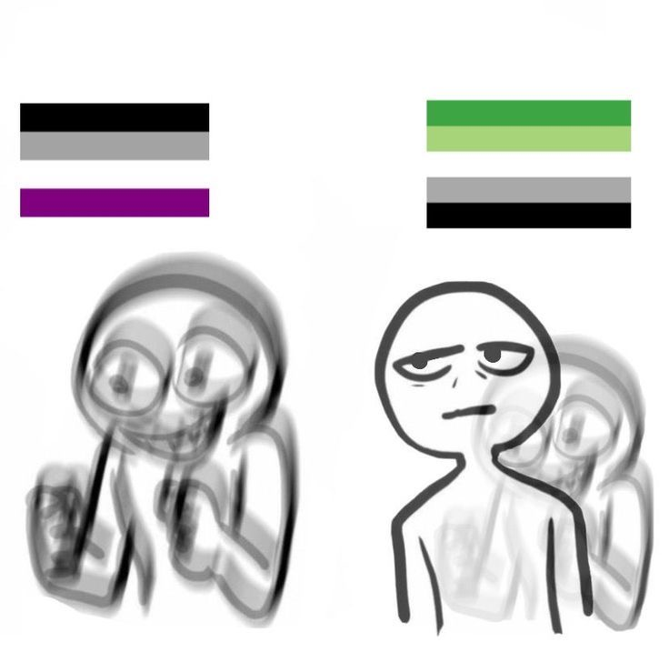
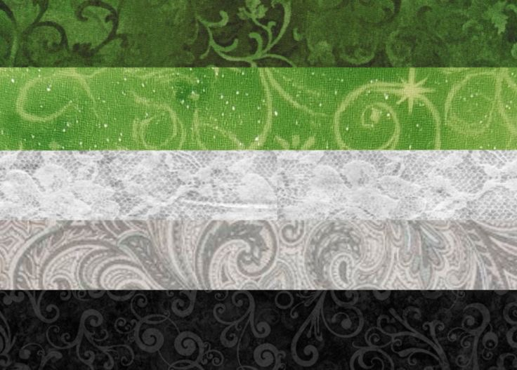
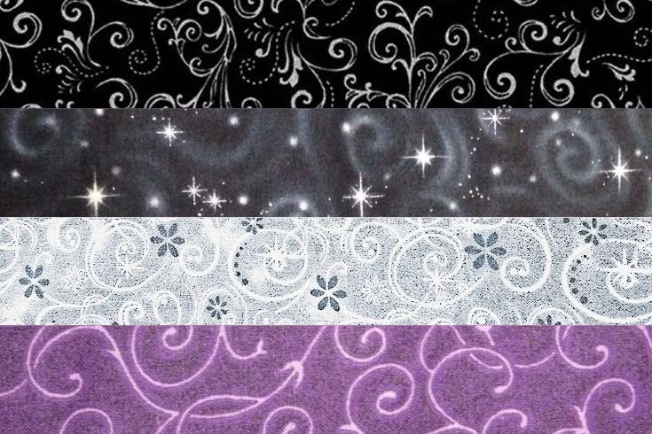

AROMANTIC VISIBILITY
Ace and Aro experiences are often misunderstood because people commonly assume everyone experiences romantic and sexual attraction. Listening to different experiences can challenge stereotypes, reduce pressure, and make room for people to describe themselves in their own words.
There is no single way to be Ace or Aro, build relationships, or live a meaningful life.
Read real experiencesThese community-inspired visuals celebrate different identities while reminding us that no single image can represent everyone.





Stories help us see that there is no single way to experience attraction, relationships, identity, or a meaningful life.
Meet the PeopleListen with curiosity. Respect people's labels, boundaries, and choices.
When people only see romance and sexual attraction presented as universal, it can be difficult to recognize experiences that don't fit that expectation. Learning from real people can make Ace and Aro identities easier to understand without reducing anyone to a label.
There is more than one way to build a life that feels like yours.
Stories can expand what we imagine is possible.